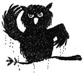

— Tevfik Amcaa!
Sonunda kurtulmuşlardı. Heyecanla birbirlerine baktılar. Zafer, ayağı bağlı olmadığı için kalkmaya çalıştı, debelendi ama olmadı. Fransız ve İngiliz ajanlar arkalarını döndüler, koca bir gülümsemeyle Ahmet Tevfik Efendi’yle selamlaştılar, birbirlerine başarı anlamına gelen bir hareket yaptılar. Ahmet Tevfik, Haşmet Bey’le de tokalaştı.
— Maşallah kıskıvrak yakalamışsınız Haşmet Bey! Kolay değildir, çok akıllıdır bunlar.
Erim büyük bir acıyla “Tevfik Amca” diyebildi. Zafer’in de dudaklarından “Tevfik Amca” kelimeleri acıyla döküldü, kelimeler yere düştü, tuzla buz oldu. Ahmet Tevfik ismi, zemine düştüğü an parçalandı; hem yerden hem de yüreklerinden uçtu gitti. Nisan’ın gözleri doldu. Sadece gözlerine bakabildi Tevfik Amca’sının, sizce bakışlar şunu diyebilir mi dostlarım? “Biz seni çok seviyorduk, her şeyimizi sana emanet ettik, Erim’in babası yerindeydin, bize ülke sevgisi anlatıyordun, eve geleceğin zaman sevinçten bir hâl oluyorduk. Zarafeti, saygıyı, öğrenmeyi temsil ediyordun gönlümüzde, çocukla çocuk olmak, maceradan hiç ürkmemek demektin. Hepsi yalandı da Müzeyyen Babaanne’ye getirdiğin çiçekler de mi yalandı? Erdoğan Amca’yla çocukluk arkadaşı olman da mı yalandı?” Belki inanmayacaksınız ama öyle bir baktı ki Tevfik Amca’sının gözlerine Nisan, o on saniyelik bakış hepsini söyledi. Belki daha fazlasını da söyledi de onları sadece Tevfik Efendi ve Nisan biliyordu. “Efendi” dediğime bakmayın, ben de en az sizin kadar sinirliyim Tevfik’e. Neyse, biz maceramıza dönelim.
Tevfik gözlerini kaçırdı çocuklardan.
— Siz büyüklerin dünyasını anlamazsınız çocuklar. Her şey farklı bizim için. Anlatsam da anlamazsınız. Biz sizin kadar temiz olamayız hiç. Daha fazla kazanıp, daha iyi giyinip, daha fazla harcamazsak değer, kabul görmeyiz. Yapmam lazımdı. Sizi sevmediğimi zannetmeyin ama bu sadece iş meselesi.
Erim,
— “Sadece iş” mi dedin? Sadece iş mi? Vatanın değerleri çalınıyor, ülkenin servetini çalıyorlar. Sen sadece iş diyorsun. Kurtuluş Savaşı’na da gitmedin sen. Babam canını verdi orada, seninle aynı yaştaydı. Sen İstanbul’da film seyrettin, değerli velosipetine binip keyif sürdün. “Tevfik Amca niye savaşa gitmedi babamla?” diye sorduğumda babaanneme “Bir sebebi varmış oğlum, baban demişti ki, ‘Sakın üstüne gitme anne, o da ülkesini sever ama haklı sebepleri varmış’” derdi. Allah belanı versin senin, ülke sevginin de senin de... Şerefsiz!
Haşmet koştu ve bir tokat attı Erim’e. Erim döndü, elleri kolları bağlı, yüzü kıpkırmızı, hiddet içinde Ahmet Tevfik’e baktı, sonra sırıtan Haşmet’in yüzüne büyük bir cesaretle tükürdü. Haşmet yüzünü silip bir tokat daha attı Erim’e.
Zafer,
— Sıkıyorsa bir tane de bana vursana!
Haşmet ayağa kalktı, sırıttı.
— Allah vurmuş sana, bi de ben ne vuracağım la!
Zafer üzüntüyle başını önüne eğdi. Tevfik, Haşmet’in omzundan tuttu ve geri çekti.
— Tamam Haşmet Efendi, uzatma değmez.
Ahmet Tevfik’in çok utandığı her hâlinden belliydi.
— Dışarıda Fransız şilebi içinde yüzlerce işçi ve istihbaratçı subay bekliyor. İki adet İngiliz denizaltısı da koruma için hazır. Sabaha kadar ancak taşırız buradaki hazineyi. Sen sağ, ben selamet sonra...
— Sonracığıma da sana söz verdiğimiz gi-bi Fransa’da yeni kimliğinle yaşayacan Ahmet Tevfik, İngilizler de hazır, senü İngiliz etmeye haberün olsun. Şefimiz haber yollamış bu iş başarıyla biterse ekstra para da ödeyeceğlermiş.
— Bir an önce işi bitirelim, dedi Tevfik ve yabancı ajanlara İngilizce bazı talimatlar verdi.
İri yarı İngiliz ve Fransız adamlar geldiler. Nicholas, Erim’i omzuna aldı, David Nisan’ı, Tevfik de Zafer’i. Geldikleri tuzaklı koridordan dikkatle geriye doğru çıktılar. Erim iki ajanın İngilizce konuştuklarını duyuyor, arada “children, death, danger, enemy” gibi kelimeler işitiyordu.
Karanlık merdivenlerden yukarı doğru çıkarken dışarıdan gece böceklerinin sesleri duyuluyordu ve bir puhu kuşu “puuu puuuu” diye ötüyordu. Erim, “Bizim köşkün bahçesindeki puhu kuşunun sesine amma benziyor” diye düşündü. “Şimdi ikizlerin yanlarında olmak için neler vermezdim” dedi kendi kendine. Ay ışığı bir anda yüzünü aydınlattı. Kendini hiç bu kadar çaresiz hissetmemişti.

Hepsi merdivenlerden çıktılar; önde Erim ve karga burunlu meymenetsiz Nicholas, arkalarında David ve Nisan, en arkadan Ahmet Tevfik ve Zafer geliyorlardı. Ajanlar Kara Oklar Çetesi’nin üyelerini omuzlarının üzerinde, ayakları ileride, kafaları geriyi gösterecek şekilde taşıdıklarından çocuklar gittikleri yeri görmüyor, sadece toprağı ve arkayı görebiliyorlardı. En arkada olan Zafer kafasını bir an kaldırdı ve “Yok artık” dedi içinden. “Bir sen eksiktin ekipte, sen de tamamlandın.” Adada görmek isteyeceği son adam, Arap, arkalarındaydı.
— Demek dışarıda nöbet tutuyordun pis herif! Belliydi senin de ekipten olduğun da şimdiye kadar neredeydin?
Arap, Zafer’e baktı, baktı, bir anda ona doğru koşmaya başladı. “Şimdi bittim” dedi Zafer bağlı ellerini çift yumruk yapıp çaresizce ileri doğru uzattı, gözlerini kapadı, dua edip beklemeye başladı. Bir anda şiddetle yere yuvarlandı, arkası dönük olduğu için başlayan kargaşayı, yumruklaşmayı ancak duyuyor ama göremiyordu. Karanlıkta bağrışmalar gittikçe arttı. Pis herif, Nisan’la Erim’i de dövüyor, ötekiler de “yapma, etme” diyorlar İngilizce, Fransızca... “Elin gâvuru bizim Arap’tan daha insaflı çıktı” diye düşündü. Biraz debelenerek döndü. David, Nicholas ve Ahmet Tevfik yerde ve üstlerinde Arap ve tanımadığı iki kişi onları yere bastırmış olarak gördü. “Ne oluyor Allah aşkına!” dedi kendi kendine.
Bir anda arkadan Haşmet Efendi’nin elinde silahla koşarak önünden geçtiğini gördü. Amacı, arkaları dönük bu üç kişiye zarar vermekti. Tam önünden geçerken Haşmet Efendi kaygan bir şeye bastı ve ayakları havaya kalktı, başı geriye doğru “küüt” diye indi –köşkün bahçesinde Cimbo’dan kaçarken düştüğü gibi. Kalkmak için hareketlendi. Zafer, önünde duran Haşmet Efendi’nin kafasına bastonla bir tane geçirdi. Bir daha debelendi Haşmet; Zafer, oturduğu yerden adamın her denemesinde kafasına bastonla geçirmeye devam etti.
Erim ve Nisan, Zafer’in yanında belirdiler, yardım edip ayağa kaldırdılar. Zafer iki adımda Haşmet’in başına geldi. Haşmet korkuyla “Allah aşkına vurma!” dedi. Zafer gülümsedi ve bombayı patlattı:
— Sana Allah vurmuş zaten!
Nisan ve Erim kahkahayı bastılar.
Gençler karşılarında bir anda Arap’ı gördüler. Arap, gençlere selam çaktı.
— Sevgili kahramanlar sizi tebrik ediyorum. Ben Teşkilat-ı Mahsusa’dan[29] Yüzbaşı Orhan. Çok büyük bir vazife başardınız. Sağ olun, var olun.
Bu arada çalıların arasından çıkan askerler bir anda her yeri kaplamıştı. Askerin biri koşarak geldi:
— Komutanım, teşkilat başkanımız geli-yorlar.
Orhan Yüzbaşı dikkat çekti, bütün askerler esas duruşa geçtiler. Çocuklar, ay ışığının aydınlattığı patikadan yukarı doğru yuvarlanan toplar gördüler. Nisan heyecanla kalktı ve haykırdı:
— Beybaba!
Çocuklar koşarak Muhittin Dedelerine sarıldılar. Muhittin Dede üçünü de öptü, kokladı.
— Canlarım benim... Büyük iş başardınız!
— Aslan beybaba... Bir ara çok korktuk.
— Sizi yalnız bırakır mıyız canlarım; her anınızı takip ettik. Merak etmeyin... Orhan, ne oldu gemiler?
— Komutanım, İngiliz denizaltıları karan-lıktan faydalanıp kaçtılar. Fransız şilebine ise el kondu, içerideki mürettebat tutuklandı. İki harp gemimiz Yavuz ve Midilli etraflarını çevirdi. Vinçler, taşıma araçları, kamyonlar büyük bir hazırlıkla gelmişler. İşin ilginç tarafı, gemi Fransız, personelin ise büyük kısmı Amerikalı.
— Öyledir onlar, bir yağma oldu mu akbaba gibi bir araya gelirler. Bu ajanları da alın, ayrı ayrı yerlerde sorguya çekin. Hadi çocuklar, önce aşağıyı gezdirin bana, sonra da evimize dönelim. Aslanlarım benim!
Çocuklar parlayan ay ışığının altında Muhittin Dede’yle el ele tutuştular, manastıra doğru yürümeye başladılar. O sırada Haşmet’in söylendiğini duydular:
— Gardaşım, yolun üstünde balık ne arıyor? Üstüne basıp düştüm yahu!
Zafer döndü, “Ben attım onu önüne düş diye, balık değil o, kofana!” deyince Muhittin Dede dâhil bastılar kahkahayı.